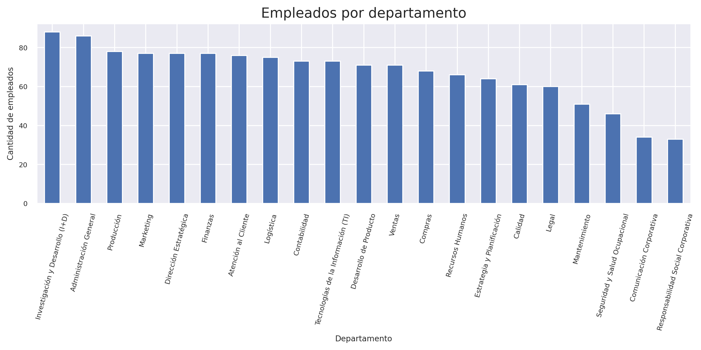
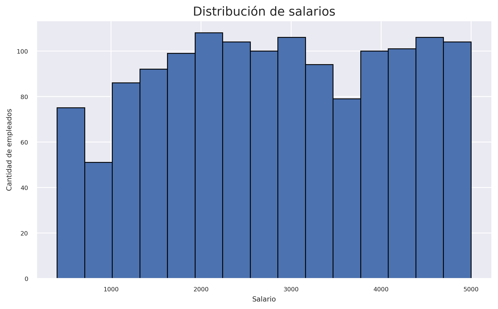
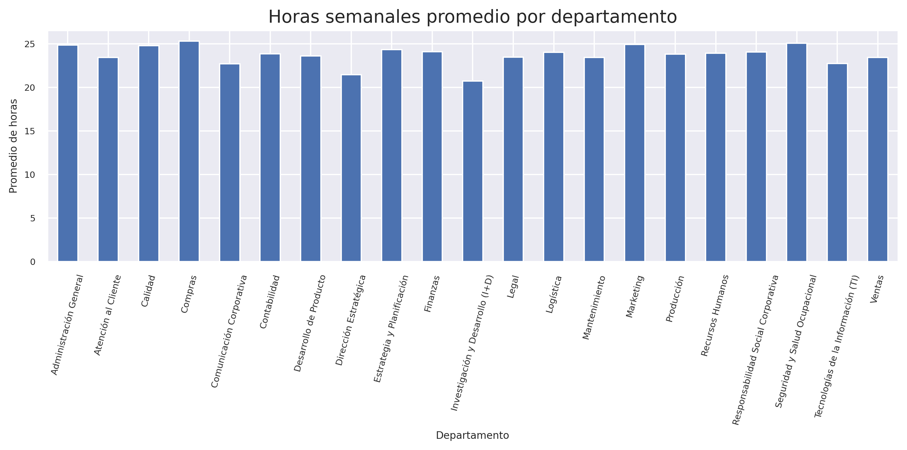
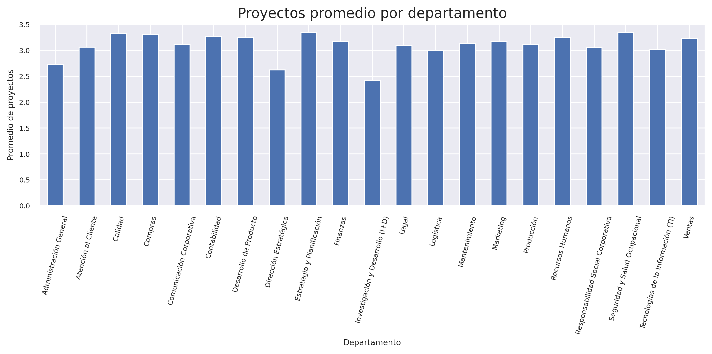

GRÁFICO 01
Empleados por departamento

Identifica qué departamentos reúnen más personal.
REPORTE DE ANÁLISIS
Una mirada general a la distribución del personal, los salarios, las horas semanales y los proyectos por departamento.
01 · BASE DE DATOS
La base contiene información de 1,405 empleados organizada en siete columnas: código de empleado, nombre, departamento, salario, fecha de ingreso, número de proyectos y horas semanales. Para proteger la privacidad, este sitio presenta resultados agregados y no publica nombres ni códigos personales.
02 · VISUALIZACIÓN
Los siguientes gráficos permiten comparar áreas de trabajo y observar cómo se distribuyen algunas variables de la base.

Identifica qué departamentos reúnen más personal.

Resume la frecuencia de los salarios registrados.

Compara el promedio de horas semanales por área.

Muestra el promedio de proyectos por empleado en cada área.
03 · CONCLUSIÓN
El análisis descriptivo permite resumir la información del personal y comparar departamentos mediante indicadores sencillos. Estos resultados pueden apoyar una revisión inicial de la distribución de empleados, salarios, horas y proyectos. Para tomar decisiones, conviene complementar los gráficos con el contexto de la organización y validar los datos.